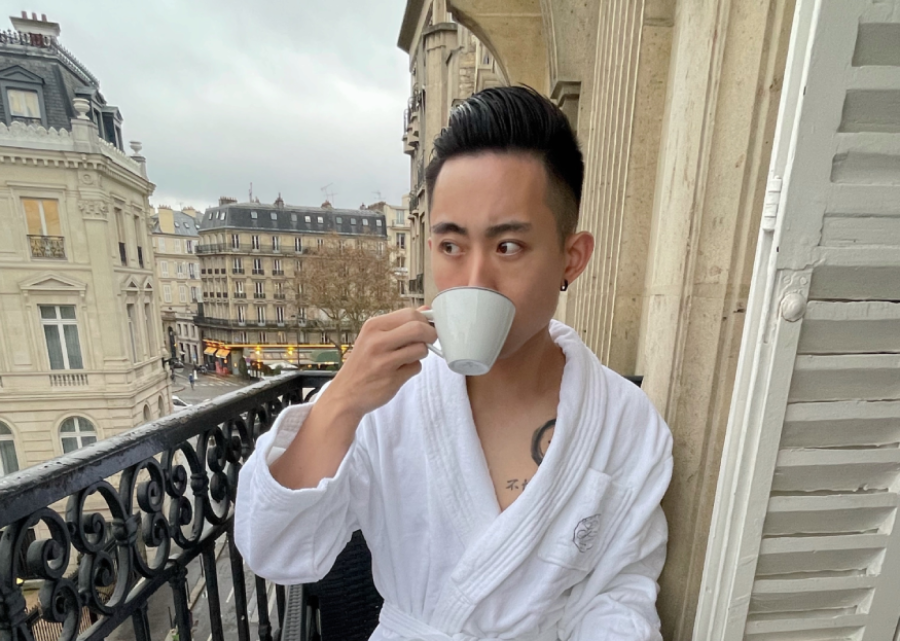
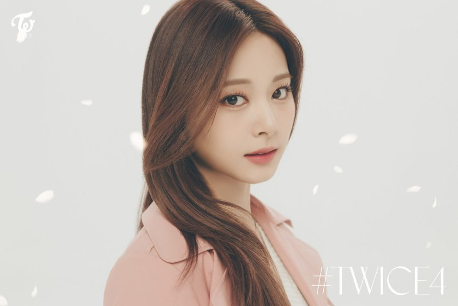

Who Are We?
LBS of Tea was founded by three people who all share a passion for tea. The term "tea" is also a slang for gossip, typically shared between friends. It's a time for bonding and applicable to all ages.
With this idea in mind, this cafe was created to bring people together; spending qualiTEA time with one another.
Meet the creative minds behind it all!
BRYAN LIM
Born in Vancouver, BC, Bryan has been a tea-lover since young. While most people drink coffee to wake themselves up, Bryan brews a fresh cup of tea. The refreshing and cleansing feeling washes away the impurities of yesterday.
In his spare time, he enjoys playing basketball and trying out new food. Pre-pandemic, Bryan would travel to different countries for leisure and to learn about how tea is valued there.
TZUYU CHOU
A popular member of the Korean girl group "TWICE", her parents own a teashop in Tainan, Taiwan. Expanding her roots and her parents' business, she wanted to preserve the tea culture in Vancouver too.
Known for her strong visuals, many customers come to get a glimpse of her beauty. She prides herself in obtaining only the finest ingredients, and as such, is an integral part of the team.
MINA MYOI
Another popular member of the Korean girl group "TWICE", Mina's shy but witty personality attracts many customers. Calm and composed, she has one of the most creative minds. Most of the tea names in the menu page are accredited to her.
Her favourite drink is "sereniTEA" because it helps keep the creativity flowing. A customer-favourite, but no doubt that Mina's intellect has contributed largely to the success of this cafe.